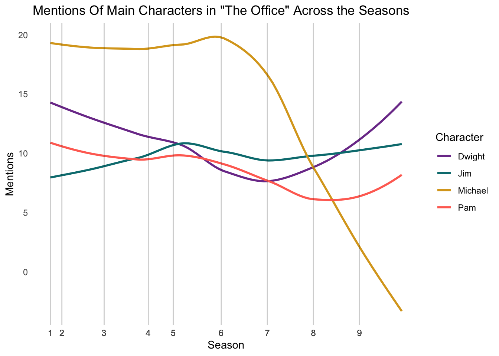

library(tidyverse)The Office - Mini Text Analysis Project
Every Line in the Office
Loading Packages
The only package I use is the tidyverse
Loading the Dataset
The dataset comes from a Kaggle user Fabrizio Cominetti who acuried the data from scrapping officequotes.net. I downloaded the csv and loaded it into my directory for accsses.
office <- read.csv("the-office_lines.csv")
colnames(office)[1] "X" "Character" "Line" "Season"
[5] "Episode_Number"Dataset Manipulation For Graphing Character Mentions Overtime
This R chunk aims to create a dataset called main_4_mentions. First, a variable representing each character’s name is created, with a value of 1 if that character is mentioned in a line and 0 otherwise. The data is then grouped by episode and season, summarizing the mentions per episode. Next, the data is pivoted to create a variable called character and another variable called count, indicating how many times each character is mentioned. Additionally, a new variable called season_episode is created, which only contains values for the first episode of each season; this will serve as a marker for the start of each season in the ggplot.
main_4_mentions <- office |>
mutate(Jim = ifelse(str_detect(Line, "(?i)jim"), 1, 0)) |>
mutate(Pam = ifelse(str_detect(Line, "(?i)pam"), 1, 0)) |>
mutate(Michael = ifelse(str_detect(Line, "(?i)michael"), 1, 0)) |>
mutate(Dwight = ifelse(str_detect(Line, "(?i)dwight"), 1, 0)) |>
arrange(Season, Episode_Number) |>
group_by(Season, Episode_Number) |>
summarize(Jim = sum(Jim),
Pam = sum(Pam),
Michael = sum(Michael),
Dwight = sum(Dwight)) |>
ungroup() |>
mutate(season_episode_num = row_number()) |>
mutate(season_episode = ifelse(Episode_Number == 1, Season, "")) |>
select(Jim:season_episode) |>
pivot_longer(cols = Jim:Dwight,
names_to = "character",
values_to = "count")
main_4_mentions# A tibble: 736 × 4
season_episode_num season_episode character count
<int> <chr> <chr> <dbl>
1 1 "1" Jim 7
2 1 "1" Pam 17
3 1 "1" Michael 7
4 1 "1" Dwight 8
5 2 "" Jim 6
6 2 "" Pam 4
7 2 "" Michael 15
8 2 "" Dwight 10
9 3 "" Jim 17
10 3 "" Pam 10
# ℹ 726 more rowsI am identifying the season_episode_num where a new season begins to add vertical lines on the graph, enhancing its visualization.
vline_positions <- main_4_mentions |>
filter(season_episode != "") |>
distinct(season_episode_num) |>
pull()
print(vline_positions)[1] 1 7 29 52 65 90 114 138 162Graph of the main four characters overtime
The data is now plotted using the geom_smooth function, which captures the general patterns over the episodes and seasons. We find that Michael is the most mentioned character until the later seasons. Mentions of Jim remain relatively stable over time, while mentions of Pam and Dwight decline around seasons 5 and 6 before starting to trend upward.
main_4_mentions |>
ggplot(aes(x = season_episode_num, y = count, color = character)) +
geom_smooth(se = FALSE) +
labs(x = "Season",
y = "Mentions",
color = "Character",
title = 'Mentions Of Main Characters in "The Office" Across the Seasons') +
scale_x_continuous( breaks = main_4_mentions$season_episode_num,
labels = main_4_mentions$season_episode) +
scale_color_manual(values = c("Pam" = "#FF6F61",
"Jim" = "#007B7F",
"Dwight" = "#7D3C98",
"Michael" = "#DAA520")) +
geom_vline(xintercept = vline_positions, color = "black", alpha = 0.2, linetype = "solid") +
theme_minimal() +
theme(panel.grid = element_blank())
Creating a plot of most “on task” Office Characters
Data manipulation
The goal of this first R chunk is to create two objects: the first, main_characters, will contain the names of the 15 main characters from the show, and the second will be a regular expression used to identify work-related lines. The work-related phrases were generated by ChatGPT.
main_characters <- c("Michael", "Jim", "Pam", "Dwight", "Ryan", "Angela",
"Andy", "Stanley", "Phyllis", "Kelly", "Toby",
"Kevin", "Oscar", "Creed", "Meredith")
ontask_regular_expression <- "(?i)(Sales call|Close the deal|Client meeting|Team building|Sales quota|Dunder Mifflin|Paper company|File|Report|Workplace safety|Expense report|Business trip|Client relations|Company policy|Human resources|Submit a proposal|Meet the deadline|Job performance|Close a sale|Office supplies|Sales pitch|Productivity report|Employee evaluation|Quarterly review|Manager meeting|Sales team|Sales numbers|Work email|Conference call|Work-life balance|Overtime|Office hours|Weekly meeting|Promotion|Sales report|Job interview|Submit the paperwork|Company-wide memo|Business strategy|Client presentation|Office party|Budget meeting|New hire|Work project|Revenue target|Annual review|Management decision|Employee training|Company retreat|Work performance|quarterlies|corporate|efficien|fax)"I filtered the office dataset using the main_characters object and created variables called proportion and percentages. These represent the proportion of lines identified as containing work-related phrases.
ontask <- office |>
filter(Character %in% main_characters) |>
mutate(on_task = case_when(
str_detect(Line, ontask_regular_expression) ~ 1,
TRUE ~ 0)) |>
group_by(Character) |>
summarise(prop = sum(on_task)/n()) |>
mutate(percentage = prop * 100)
head(ontask)# A tibble: 6 × 3
Character prop percentage
<chr> <dbl> <dbl>
1 Andy 0.0127 1.27
2 Angela 0.00835 0.835
3 Creed 0.0113 1.13
4 Dwight 0.0156 1.56
5 Jim 0.00825 0.825
6 Kelly 0.00654 0.654Creating a custom color palette (experimental)
I asked ChatGPT to create a custom color palette for the characters of The Office. The colors are intended to capture each character’s “essence” for plotting purposes.
palette <- c("Michael" = "#7FB3D5", "Jim" = "#8B8B8B", "Pam" = "#FF8DAA",
"Dwight" = "#FFD700", "Ryan" = "#28A745", "Angela" = "#5B2C6F",
"Andy" = "#FF6F61", "Stanley" = "#5C3A1D", "Phyllis" = "#A0522D",
"Kelly" = "#FF1493", "Toby" = "#4A90E2", "Kevin" = "#FFA500",
"Oscar" = "#1E4D2B", "Creed" = "#C0C0C0", "Meredith" = "#A50000")Plotting
I created a graph showing the percentage of “work-related” lines by office character. Toby has the most work-related lines, with a score of 0.9% higher than Dwight, who comes in second. Kevin has the fewest work-related lines. The percentages displayed on the graph are rounded to the nearest tenth, while the bar lengths represent the exact proportions. This explains why, for example, Stanley and Meredith have the same percentage label but different bar lengths.
ontask |>
ggplot(aes(x = reorder(Character, prop), y = prop, fill = Character)) +
geom_col(show.legend = FALSE) +
geom_text(aes(label = paste0(round(percentage, 1), "%")),
vjust = 0.5,
hjust = 1.05,
size = 5,
color = "white",
fontface = "bold") +
scale_fill_manual(values = palette) +
labs(y = "Percentage Work Related",
x = "Character",
title = "Percentage of Work Related Lines By Character From 'The Office'") +
theme_minimal() +
theme(axis.text.x = element_blank(),
panel.grid = element_blank(),
plot.title = element_text(hjust = 0.6)) +
coord_flip() 
Analyzing which character has the longest average lines
Data preparation
I will use the same 15 key characters from the previous analysis. I’ll create a variable called avg_line to represent the average length of a line. To count the words per line, I will apply a regular expression. Finally, I will summarize the dataset.
avg_line_length <- office |>
filter(Character %in% main_characters) |>
mutate(word_count = str_count(Line, "\\w+")) |>
group_by(Character) |>
summarize(avg_line = mean(word_count)) |>
arrange(desc(avg_line))
avg_line_length# A tibble: 15 × 2
Character avg_line
<chr> <dbl>
1 Michael 15.3
2 Andy 13.5
3 Dwight 12.6
4 Kelly 12.1
5 Creed 11.4
6 Ryan 11.0
7 Toby 10.9
8 Jim 10.4
9 Pam 10.0
10 Angela 9.90
11 Oscar 9.87
12 Stanley 9.68
13 Kevin 9.44
14 Meredith 9.24
15 Phyllis 9.00Plotting of average amount of words in a line
This graph illustrates the average number of words per character’s line, highlighting which characters dominate conversations and which tend to be interrupted mid-thought. However, shorter lines may simply indicate they have less to say. Michael has the longest lines, followed by Andy and Dwight, while Phyllis and Meredith, the two female characters, have the shortest lines.
avg_line_length |>
ggplot(aes(x = reorder(Character, avg_line), y = avg_line, fill = Character)) +
geom_col(show.legend = FALSE) +
geom_text(aes(label = paste0(round(avg_line, 1))),
vjust = 0.5,
hjust = 1.11,
size = 5,
color = "white",
fontface = "bold") +
scale_fill_manual(values = palette) +
labs(y = "Average Word Count",
x = "Character",
title = "Average Count of Words in a Character's Line") +
theme_minimal() +
theme(axis.text.x = element_blank(),
panel.grid = element_blank(),
plot.title = element_text(hjust = 0.5)) +
coord_flip()